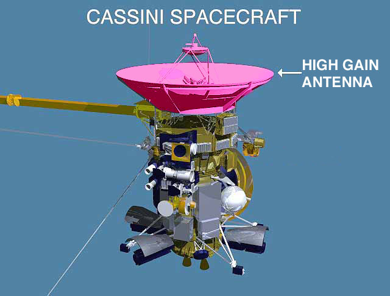

Море на Титане
2013-05-22
На сайте NASA появилась фотография моря на Титане очень
похожего на наши земные моря.
{kind=link}
Фото создано путём объединения нескольких кадров, сделанных в 2006-2007 годах сквозь облачную атмосферу Титана при помощи радара RADAR с борта Кассини. Затем тёмная область (море) окрашено в чёрный цвет, а более яркие места - в оттенки жёлтого. Цвета условные, но правдоподобные.
На хороших спутниковых снимках земные моря тоже получаются тёмными потому, что они отражают свет Солнца в сторону от спутника. Иначе фотография будет засвеченной, и нам её не покажут. Моря на Титане получаются тёмными, потому что для ровной поверхности моря угол падения равен углу отражения . Море отразило бы луч радара строго обратно, если бы радар располагался строго в зените над точкой фотографирования, а это обычно не так. Неровная поверхность гор получается более светлой потому, что частично отражает луч радара обратно.
Хорошо видны острова и впадающие в море реки. Размер водоёма около 400 км. В отличие от земных морей озёра и моря на Титане наполнены жидким этаном и метаном при температуре около -180°C .
Есть гипотеза, что в глубине под поверхностью Титана, где температура гораздо выше, чем на поверхности, находится океан настоящей жидкой воды. Дело в том, что Кассини наблюдает приливное движение поверхности Титана амплитудой до 10 метров. А по расчётам для твёрдой планеты получается около 1 метра. Ниже водяного океана Титан каменный, как Земля, а выше - твёрдые породы - это в основном водяной лёд.
Радар - один из главных инструментов на борту Кассини. Он может получать изображения в микроволновом диапазоне 13.78 GHz как в пассивном режиме (естественное излучение объекта и отражение лучей естественных источников), так и в активном (посылая импульсы, и измеряя величину и запаздывание отражённого сигнала).
